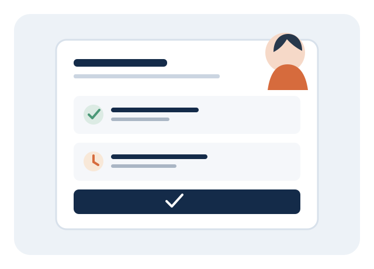
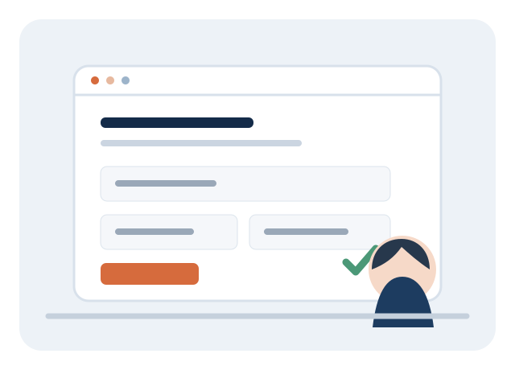

Oportunidades e talentos mais perto.
O ConectaTrabalho aproxima quem está procurando emprego das empresas que precisam de pessoas. Veja como usar a plataforma, do cadastro até a candidatura.
Escolha como você quer participar
A plataforma tem uma experiência para quem procura uma oportunidade e outra para empresas que desejam divulgar vagas.
Encontre uma oportunidade que combine com você
Você não precisa entrar em contato com cada empresa para descobrir se há vagas. Consulte as oportunidades disponíveis diretamente na plataforma.
- 01
Faça seu cadastro
Acesse Cadastrar, escolha a opção de candidato e informe seus dados para criar sua conta.
- 02
Pesquise as vagas
Entre em Vagas e procure pelo cargo, área ou cidade desejada. Você também pode começar pela busca na página inicial.
- 03
Leia os detalhes
Confira a descrição, os requisitos, o tipo de contrato, a modalidade e as informações divulgadas pela empresa.
- 04
Envie sua candidatura
Entre na sua conta e candidate-se à oportunidade escolhida. Se desejar, escreva uma mensagem para acompanhar sua candidatura.
- 05
Acompanhe pelo painel
No painel do candidato, consulte as candidaturas que você enviou e veja as atualizações de status feitas pela empresa.


Divulgue vagas e encontre profissionais
O painel da empresa reúne a publicação de oportunidades e o acompanhamento das candidaturas recebidas.
- 01
Crie uma conta empresarial
Acesse Cadastrar e escolha a opção de empresa. Informe os dados solicitados para iniciar o cadastro.
- 02
Confirme os dados da empresa
O cadastro empresarial inclui a consulta do CNPJ e a confirmação do endereço de e-mail por um código enviado para sua caixa de entrada.
- 03
Publique uma vaga
No painel, informe o título, a cidade, o tipo de contrato, a modalidade, a descrição e os requisitos da oportunidade.
- 04
Receba candidaturas
Quando pessoas se candidatarem, as informações aparecerão na área de candidaturas recebidas do painel da empresa.
- 05
Atualize o andamento
Consulte os candidatos e atualize o status de cada candidatura conforme o processo seletivo avançar.
O que acontece depois da candidatura?
A empresa pode atualizar o andamento da candidatura pelo painel. Assim, o candidato consegue consultar o status disponível na própria conta.
A empresa recebeu sua candidatura.
A candidatura está sendo avaliada.
A empresa atualizou o processo para esta etapa.
A candidatura foi marcada como aprovada.
A empresa encerrou a candidatura sem aprovação.
As atualizações dependem da empresa responsável pela vaga. O status exibido não substitui um contato ou convite formal da empresa.
Antes de começar
Algumas respostas para você usar a plataforma com tranquilidade.
Preciso pagar para procurar vagas?
Não. A busca por oportunidades e o uso da conta de candidato são gratuitos.
Posso procurar vagas em outras cidades?
Sim. Na busca, informe a cidade em que deseja encontrar oportunidades. A disponibilidade depende das vagas publicadas pelas empresas.
Como sei se minha candidatura foi recebida?
Depois de se candidatar, consulte o painel do candidato. A candidatura enviada aparece na lista para acompanhamento.
Como uma empresa confirma o cadastro?
O cadastro empresarial solicita os dados do CNPJ e envia um código de confirmação para o e-mail informado. O código tem prazo de validade de 10 minutos.
O ConectaTrabalho garante uma contratação?
Não. A plataforma aproxima candidatos e empresas, mas a seleção e a contratação são decisões da empresa responsável pela vaga.